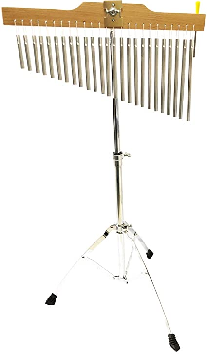
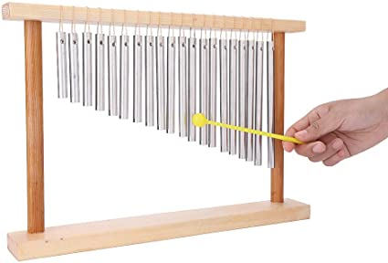

CHIMES
Chimes are a tuned instrument consisting of a set of 12 to 18 metal tubes hung from a metal frame. The metal tubes range from 1 to 2 ½ inches in diameter and from 4 to 6 feet in length. The chimes, or tubular bells, are struck with a mallet and sound like church bells when played. The longer the length of tube that is struck, the lower the pitch that is created.
The earliest chimes were Chinese stone chimes, sets of L-shaped marble slabs (qing) suspended in wooden frames and struck by mallets. These instruments were used as early as the Shang dynasty (1766–1122 BCE). By the Zhou dynasty (c. 1122–221 BCE), bronze bells (zhong) were hung downward, usually in sets of 8 or 16, and tuned chromatically. A bianzhong (“set of bells”) from the Han dynasty (206 BCE–220 CE) contain bell sets in which different pitches can be produced by striking marked spots on the lip of each bell. Bell chimes were part of court and temple ensembles. Their tunings were reset with each new ruler to keep China in harmony with the universe. Later, bell chimes were used in neighbouring cultures, such as those of Korea, India, and Japan.
Late in the 18th century a chime of 10 to 20 bells playable from a wooden keyboard became fashionable in France and Great Britain. In the U.S. between about 1850 and 1930, hundreds of such chimes were installed in churches, town halls, and other towers.